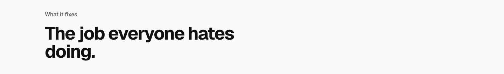
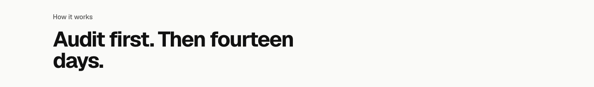
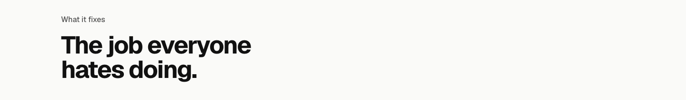
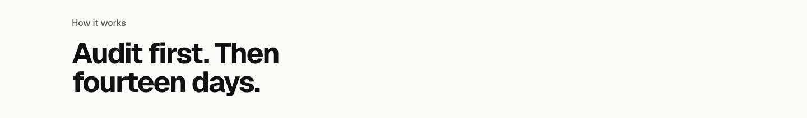

/pilot section 4, What it fixes: the details pass
Three details on one board; answer each with its number, say "heading 1, descriptions 1, wraps 1". At 1440, and 375 where the phone changes.
Detail 1: the heading (one job named above six)
TodayOne job named above six.
1. The jobs everyone hates doing.Your phrase with one letter changed, so it matches the six under it. Recommended.
2. Got a job everyone hates doing?Your original question, the one you kept on the homepage before you rewrote it: the reader finds theirs in the grid.
3. Which job does everyone hate doing?Asks the reader to pick one from the six.
Detail 2: the six descriptions
TodayFragments and slogan beats: Entered once, synced everywhere; drafted for you, checked by you, sent in seconds; on time, every time.
1. Plain sentencesEach one a plain sentence about what changes, no beats. Recommended: the same facts, said the way the rest of the page says things.
2. The names onlySix jobs named and nothing under them, larger: the reader recognises theirs and moves on.
3. One line for the sixThe names only, then one plain line under the grid for all six.
Detail 3: headings that leave one word alone (this one and How it works)
Todaydoing. alone on the second line; How it works leaves days. alone.


1. Balanced headingsEvery heading on the page breaks into even lines (text-wrap: balance), so no word sits alone. Recommended: the page-wide fix, one line of CSS.

